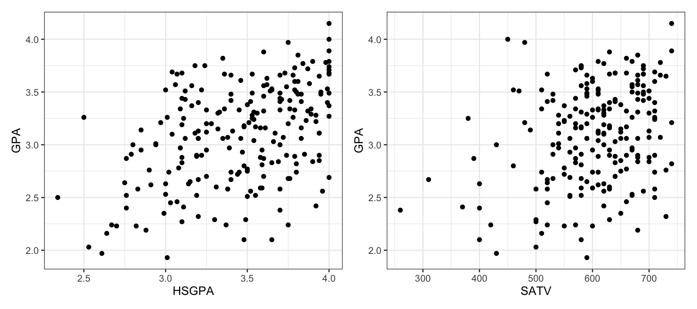
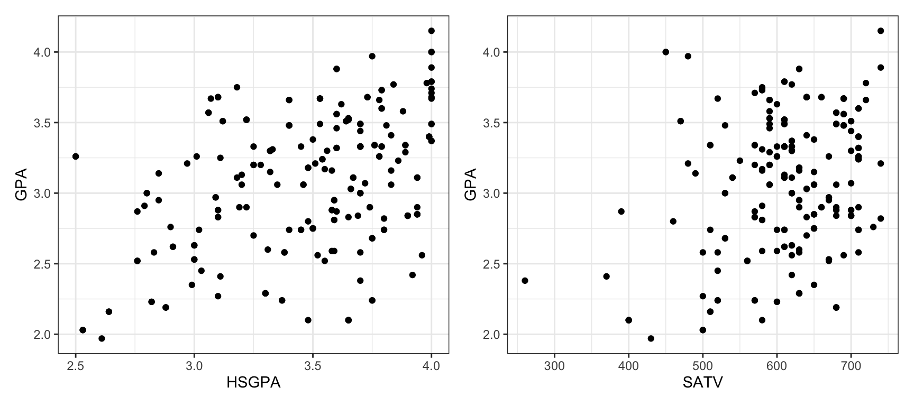

Class activity: Exploring confidence intervals
Instructions:
- Work individually or with a neighbor to answer the following questions
- To get started, download the class activity template file
- When you are finished, render the file as an HTML and submit the HTML to Canvas (let me know if you encounter any problems)
First Year GPA
Previously, we have worked with data on the first year GPAs for a sample of 219 college students. The FirstYearGPA dataset, in the Stat2Data package, includes the variables:
GPA: the student’s GPA in their first year of collegeHSGPA: the student’s high school GPASATV: the student’s verbal SAT score
Here are two scatterplots showing the relationships between these variables
We are interested in predicting first year GPA from high school GPA and verbal SAT score, so we fit the model
\[\text{GPA} = \beta_0 + \beta_1 \text{HSGPA} + \beta_2 \text{SATV} + \varepsilon\]
- Question 1: Fit the linear model in R, using the
FirstYearGPAdata.
We now wish to examine the relationship between high school GPA and first-year college GPA, after accounting for SAT score (to potentially account for different grading systems in different high schools).
- Question 2: Create and interpret a 95% confidence interval for the average change in first-year GPA associated with a 1-unit increase in high school GPA, holding verbal SAT score fixed. You can get the critical value \(t^*\) with
qt(..., df = ..., lower.tail=F), where you will fill in theqtfunction with the desired amount in each tail and the degrees of freedom for the relevant \(t\)-distribution.
Understanding confidence intervals
You may wonder why we use a \(t\)-distribution, or why our confidence interval is \(\widehat{\beta} \pm t^* SE_{\widehat{\beta}}\), or where we get \(SE_{\widehat{\beta}}\) from in the first place. To try to explore those questions, the next part of the class activity will do some simulation.
We can think of a confidence interval as providing reasonable range of values for an unknown parameter. The parameter isn’t guaranteed to be included in this range, but this is the range where we think it might be. We use a confidence interval because, while we calculate an estimate \(\widehat{\beta}\) from our sample data, we know that estimate will change if we were to take another sample.
Bootstrapping
In actual practice, we don’t get to take another sample from the population – we only have the one sample of data. But, we can try to approximate the process of sampling from the population, by sampling with replacement from our data. This is called bootstrapping.
The code below creates a bootstrap sample:
# create the bootstrap data
bootstrap_data <- FirstYearGPA |>
sample_n(n(), replace = TRUE)And here are the scatterplots for the bootstrap data:

These plots look similar to the ones above, but not identical, because we have slightly different data.
- Question 3: Run the code to create the bootstrap data, then re-fit the linear model from question 1 using the bootstrap data. Explain why the estimated regression coefficients are similar, but not identical.
The key idea of bootstrapping is that we can approximate the variability of a statistic, like \(\widehat{\beta}\), by looking at the variability in many bootstrap samples. The following code produces 10000 bootstrap samples, and computes \(\widehat{\beta}_1\) for each sample. We then compute the standard deviation of these bootstrap estimates \(\widehat{\beta}_1\):
nsim <- 10000
bootstrap_coefficients <- rep(NA, nsim)
for(i in 1:nsim){
bootstrap_data <- FirstYearGPA |>
sample_n(n(), replace = TRUE)
m_boot <- lm(GPA ~ HSGPA + SATV, data = bootstrap_data)
bootstrap_coefficients[i] <- coef(m_boot)[2]
}
# standard deviation of bootstrap estimates
sd(bootstrap_coefficients)- Question 4: Run the code (it may take a few seconds; if it takes too long, decrease the number of simulations). How does the standard deviation compare with the standard error \(SE_{\widehat{\beta}_1}\) you used to compute the confidence interval in question 2?
Now let’s look at the distribution of the bootstrap coefficients:
hist(bootstrap_coefficients)- Question 5: What does the distribution look like?
Bootstrap percentile interval
Here is an intuitive way to create a 95% confidence interval for \(\beta_1\): make the lower endpoint the 2.5th percentile of the bootstrap samples, and the upper endpoint the 97.5th percentile. That is: the confidence interval is just the middle 95% of bootstrap samples! If the bootstrap is trying to approximate sampling from the population, then the middle of the bootstrap distribution should be “reasonable range” of values for \(\beta_1\).
Here is code to compute those endpoints:
quantile(bootstrap_coefficients, 0.025)
quantile(bootstrap_coefficients, 0.975)- Question 6: How do the 2.5th percentile and 97.5th percentile compare to your confidence interval endpoints from question 2?